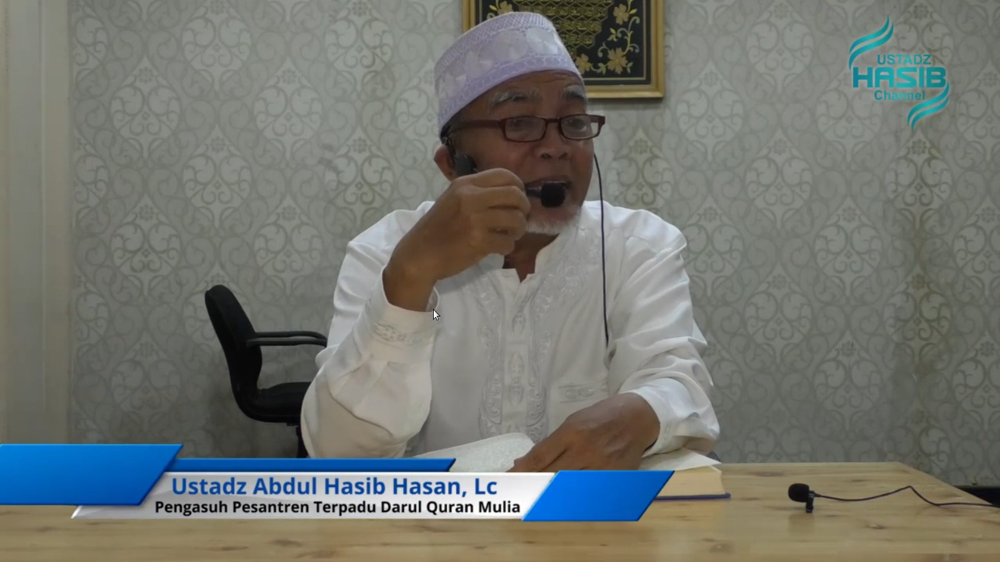

HOME
KURIKULUM

Pesantren Terpadu Darul Qur’an Mulia memadukan empat kurikulum pokok menjadi satu kesatuan yang terpadu :
1. Kurikulum Al-Qur’an yang meliputi; Tahsin Tilawah, Tahfizhul Qur’an, Tafhimul Qur’an, dan Tathbiq Amaly.
- Program Tahsin adalah program Al-Qur’an pertama yang dijalankan para santri. Santri tidak diizinkan untuk mengikuti tahfizh sebelum dinyatakan lulus pada tes tahsin.
- Program Tahfizh adalah program yang memiliki alokasi waktu paling banyak yang terbagi dalam 4 waktu; pertama, setelah sholat Subuh yang digunakan untuk menyetorkan hafalan baru, kedua, setelah sholat Zuhur yang digunakan untuk menyiapkan setoran murojaah sore, ketiga, setelah sholat Ashar yang digunakan untuk menyetorkan murojaah, dan keempat, setelah sholat Maghrib yang digunakan untuk menyiapkan setoran hafalan baru.
- Program Tafhim adalah program penyempurna dari program tahfizh yang diawali dengan program Terjemah Al-Qur’an. Dengan program ini diharapkan para santri dapat memahami dan menghayati hafalan Al-Qur’an yang sudah disetorkan.
2. Kurikulum Pendidikan Formal yang mengacu kepada Kurikulum Departemen Pendidikan Nasional (SMPIT dan SMAIT) Diharapkan dengan pola ini, ada penekanan secara maksimal terhadap beberapa bidang studi yang penting.
3. Kurikulum Pesantren yang mencakup 'uluum syariyah berbasis pembelajaran Berbahasa Arab secara intensif.
- Pembelajaran Bahasa Arab secara intensif juga akan semakin menyempurnakan kemampuan santri dalam memahami Al-Quran dan berinteraksi langsung dengan referensi ilmu keislaman dari sumber aslinya secara mandiri.